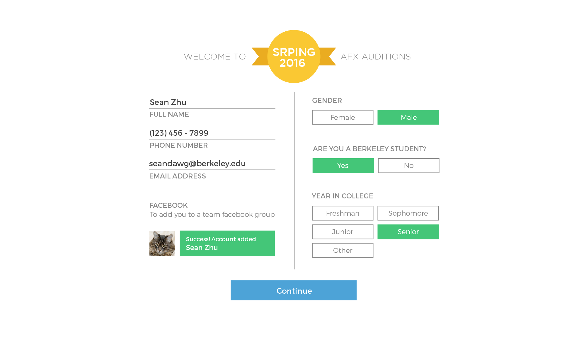
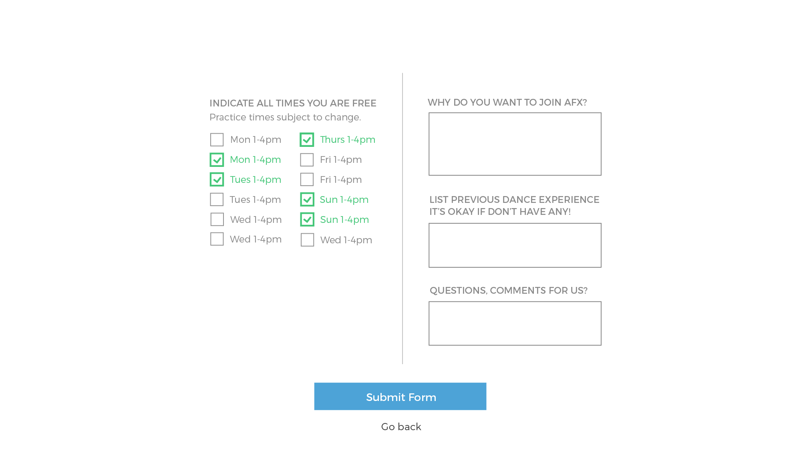
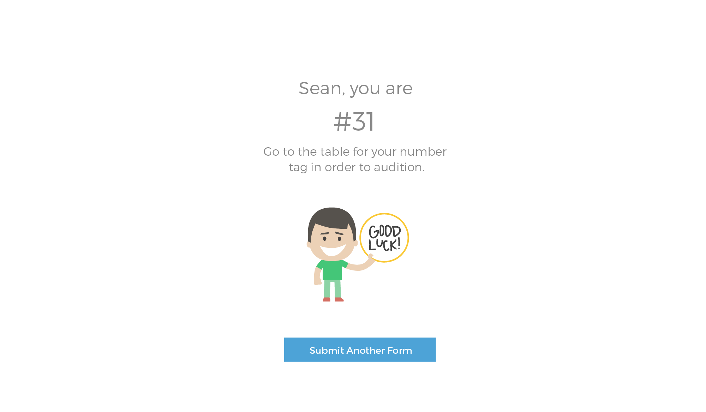

AFX Dance Registration

Webapp
AFX which stands for Aspirations, Family, eXperience is a dance organization at UC Berkeley. AFX consists of beginner and intermediate/advanced dance teams and a competition team.
AFX accepts everyone who auditions into their Training team (beginner level) tier. They hold auditions
at the beginning of each semester (usually three audition days during Fall and Spring semesters).
Due to the large number of auditionees (they broke 1000 auditionees last semester), it
was necessary to create an smooth and efficient registration app for auditions.

Personal space is an invisible yet ubiquitous force that we understand as we observe a culture over time. For example, every time I take BART (the Bay Area subway), I notice that people avoid sitting next to a stranger unless the subway is crowded. In California, sitting right next to a stranger seems like a violation of personal space.
The personal bubble concept is also attacked and exaggerated by different social expectations. For example, feminists argue that women are constantly interrupted by a man’s physical presence through the spreading of their legs ("manspreading"). This physical sign of dominance, whether intentional or not, forces the woman into a smaller space. Others add that personal space is decreasing outwardly but increasing inwardly. Personal space exists internally because of the smartphone. These devices force users to not be aware of their context and only focus on matters occurring privately within the palm of their hands.

Manspreading on public transit. Banned in NY as of January 2015.
Our intention was to neither attack nor exaggerate the personal bubble. Instead, we created a physical
bubble that not only defined the wearer’s boundaries but also intruded into others’. In doing so, we fostered conversations around physical space.
People discussed issues from cultural sensitivities to those of sexual harassment. Watch our product video below!
Final Mobile Designs
Final Web Designs


